01Su trabajo
Para la Fade me parece muy importante jugarla agresiva. La uso más para ataque: es más agresiva por los perros. A mí me gusta mucho más la Fade, aunque con el Sova juegue muchísimo más.
AltiLo de Sova también sirve mucho para la Fade: tirar bien la utilidad y con buen timing. No es necesario tener lineups del reveal: es más importante que funcione y sea útil.
Es iniciador: todo lo del rol está en la página del iniciador. Acá va lo propio de Fade.
02Habilidades
Prowler
El perro (merodeador): lo mandas adelante y, si lo mantienes apretado, lo diriges con la mira. Persigue al primer rival o rastro que ve y lo deja casi ciego.
Seize
Una bola que, al caer, deja a los rivales atrapados, sordos y con menos vida. Para entrar a un site o cortar el defuse.
Haunt
El ojo: al caer marca y revela a los rivales que lo ven. Puedes soltarlo antes para que caiga donde quieres. Se lo pueden romper.

Nightfall
La ulti: una ola que atraviesa paredes y deja a los rivales sordos, con menos vida y marcados con un rastro.
03No mueras con la utilidad
Para la Fade me parece muy importante jugarla agresiva. Y para los iniciadores en general, dependiendo (todo, como siempre, depende), no guardarse la utilidad.
Los perros de la Fade no son caros, y el dron del Sova cuesta 400. Lo ideal es gastarlos siempre que sea necesario: siempre que pueda haber un ángulo, siempre que tengas desventaja, tíralos. Si hay un rival, lo sabes y puedes armar un plan para ganarle el duelo.
Es importante no morir con la utilidad. Lo más importante del iniciador es saber dónde está el rival y cómo está posicionado.
04El perro y el timing
Por ejemplo, tiro un perro sin dirigirlo, solamente lo tiro hacia adelante y me abro, porque sé que cuando alguien va a dispararle al perro, yo tengo el timing para abrirme y matarlo.
05No la tires apenas empieza
Igual que con el Sova: guarda los perros y el ojo para el retake o para cuando ya no escuchas nada. Si siguen haciendo ruido, ya sabes que hay alguien.
06La compra
Fade
Ghost, Prowler. Otra opción: Classic, Seize, Prowler (dos).
 Ghost
Ghost Prowler
Prowler Classic
Classic Seize
Seize
Después de la pistola
Solo lo barato
Lo que se recarga. El dron caro (400) no, salvo que ya estén ganando la ronda.
Info y flash
Tu flash o tu info, una Spectre o Bulldog y escudo ligero. Tu utilidad es lo que le da chance al force.
Toda la utilidad
Rifle, escudo pesado y todas tus habilidades. En las rondas grandes nadie se queda sin utilidad.
07En ataque
- El perro adelante y tú detrás: cuando le disparan al perro, te abres y lo matas.
- El ojo justo antes de que entre tu duelista, para que entre sabiendo dónde están.
- Seize en la entrada del site, con tu equipo listo para pasar.
- Guarda un perro para el mid-round o para limpiar una esquina antes de plantar.
08En defensa
- Guarda el ojo y los perros para el retake o para cuando dejas de escuchar.
- Seize para cortar el defuse o frenar la entrada.
- La ulti es para el retake: tu equipo entra cuando están sordos y marcados.
- Callea lo que revela tu utilidad.
09Por mapa
Los humos de cada mapa, con mis tableros y mis capturas en el juego, están en la guía de humos. Elige el mapa: